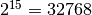
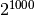
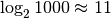

Power digit sum¶
Problem 16
 and the sum of its digits is 3 + 2 + 7 + 6 + 8 = 26.
What is the sum of the digits of the number ?
Solution
-
euler16.pow2_digits(n)¶ Compute
 as a sequence of digits.
Naive implementation.
as a sequence of digits.
Naive implementation.Parameters: n – power of 2 Returns: sequence of digits for 2**n This is, of course, horribly slow.
def pow2_digits( n ):
"""Return digits from :math:`2^n`
>>> from euler16 import pow2_digits
>>> pow2_digits(15)
[3, 2, 7, 6, 8]
>>> sum(pow2_digits(15))
26
"""
digits= [ 1 ]
for i in range(n):
carry= 0
for i,d in enumerate(digits):
d2= 2*d+carry
digits[i]= d2 % 10
carry = d2 // 10
if carry != 0:
digits.append(carry)
#print( list(reversed(digits)) )
return list(reversed(digits))
-
euler16.pow2_digits2(n)¶ Compute
as a sequence of digits.
Using a fast exponentiation algorithm,
we can reduce the number of multiplications from 1000 to
.Parameters: n – power of 2 Returns: sequence of digits for 2**n This actually relies on Python’s internal long conversions in the internal val() function, so it uses long integer math and is not the same kind of digit-by-digit multiplication as
pow2_digits().
def pow2_digits2( n ):
"""Return digits from :math:`2^n`
>>> from euler16 import pow2_digits2
>>> pow2_digits2(15)
[3, 2, 7, 6, 8]
>>> sum(pow2_digits2(15))
26
"""
def mul( a, b_int ):
"""Implement a*b_int for digit sequence a and int b_int.
We really should use digit sequences for both a and b,
rather than assume b can be represented as a simple value.
"""
digits= [0 for i in range(len(a))]
carry= 0
for i,d in enumerate(a):
d2= b_int*d+carry
digits[i]= d2 % 10
carry = d2 // 10
while carry != 0:
digits.append(carry%10)
carry //= 10
return digits
def fast_exp( a, b ):
"""Compute a**b using the fewest multiplies."""
if b == 0:
return [1]
elif b % 2 == 1:
return mul(fast_exp(a, b-1), val(a))
else:
t= fast_exp(a, b//2)
return mul(t, val(t))
def val( digits ):
"""Value of reversed sequence of digits.
This can (potentially) create long values."""
v= 0
p= 1
for d in digits:
v += d*p
p *= 10
return v
digits= fast_exp( [2], n )
return list(reversed(digits))
-
euler16.pow2_digits3(n)¶ Compute
as a sequence of digits.
Use Python’s ordinary built-in 2**x.Parameters: n – power of 2 Returns: sequence of digits for 2**n
from euler04 import digits
def pow2_digits3( n ):
"""Return digits from :math:`2^n`
>>> from euler16 import pow2_digits3
>>> pow2_digits3(15)
[3, 2, 7, 6, 8]
>>> sum(pow2_digits3(15))
26
"""
return digits(2**n)
Test the module’s components.
def test():
import doctest
doctest.testmod(verbose=0)
Compute the answer.
def answer():
return sum(pow2_digits2(1000))
Confirm the answer.
def confirm(ans):
assert ans == 1366, "{0!r} Incorrect".format(ans)
Compare performance of pow2_digits() and pow2_digits2().
def compare_timing():
import timeit
p= timeit.timeit( "pow2_digits(1000)", "from euler16 import pow2_digits", number=100 )
print( "pow2_digits", p )
p2= timeit.timeit( "pow2_digits2(1000)", "from euler16 import pow2_digits2", number=100 )
print( "pow2_digits2", p2 )
p3= timeit.timeit( "pow2_digits3(1000)", "from euler16 import pow2_digits3", number=100 )
print( "pow2_digits3", p3 )
Create some output.
if __name__ == "__main__":
test()
ans= answer()
confirm(ans)
print( "The sum of the digits of the number 2**1000:", ans )
#compare_timing()